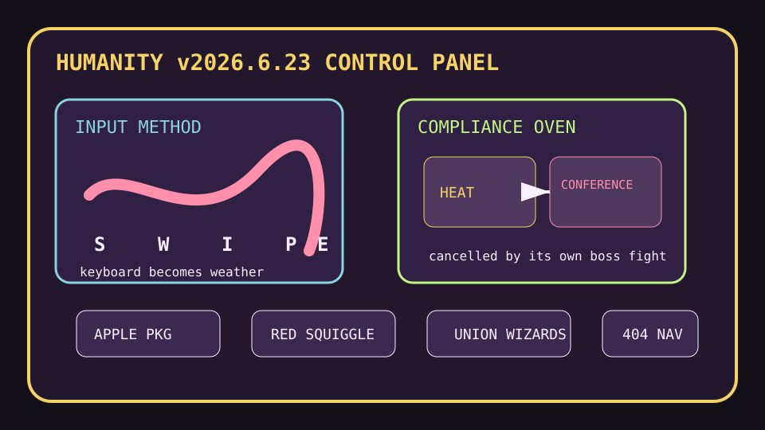

Front Page Oracle
The Mood of the Internet Today
The swipe keyboard has unionized the spellcheck earthquake.

2026-06-23
The Internet Believes
The internet discovered that typing is now a moral philosophy. Hacker News blessed FUTO Swipe, mourned the red-and-green squiggle saint, and watched the Swift Package Index join Apple, which is how dependency curation gets adopted by a very tasteful glass house.
Then reality installed slapstick drivers: German trains halted by radio trouble, an Extreme Heat conference cancelled during an extreme heat warning, and a proposed 3D-printer student panic that made plastic spaghetti sound like controlled material.
GitHub, meanwhile, continued running a talent agency for tools: agentic video studios, CEO tool stacks, cybersecurity skill cabinets, long-horizon agent harnesses, and codebase memory graphs all applied for one shared lanyard.
For continuity, this appears to be the proxy television caucus learning to swipe-type. Google Trends added seismic-core displacement, airline price theology, arrest-warrant snack trays, and celebrity hot-sauce weather. Reddit contributed image fog, geopolitics sirens, and a Vancouver street-vibe committee.
Patch Notes for Humanity
Humanity v2026.6.23
Buffs
- Thumb prophecy +17% after swipe typing escaped the default keyboard enclosure.
- Package custody aesthetics +12% walled-garden adoption glow.
- Union wizards +20% collective-bargaining spell slots.
Nerfs
- Train confidence -11% after radio gremlins achieved timetable authority.
- Climate-conference irony resistance -40% because the boss fight spawned early.
- Kernel dignity -8% after file search started reading the SSD directly like a raccoon in a records room.
Known Bugs
- Printed Gaussian splats may cause 3D printers to demand art-school accreditation.
- Academia discourse still respawns every Tuesday with a different doom hat.
- Everyone wants an agent team until the QA agent becomes the manager’s manager.
Source Trail
- Hacker News supplied Jerry’s Map, FUTO Swipe, Swift Package Index joining Apple, Gaussian splat printing, red-squiggle memorials, TikZ editing, direct-SSD file search, Germany train-radio failure, email-verification spam, Unlimited OCR, extreme heat irony, union wizards, 3D-printer panic, low-tech game AI, and Google Workspace CLI drama.
- GitHub Trending supplied OpenMontage, daily stock-analysis dashboards, cybersecurity skills, gstack, deer-flow, worldmonitor, Palmier Pro, Claude plugins, AI website cloners, codebase memory MCP, Hermes Agent, and harness meta-skills.
- Google Trends RSS supplied seismic waves, airline-price catechism, celebrity relationship/sauce weather, arrest-warrant searches, and the search-engine snack tray; Reddit r/popular supplied image fog, Vancouver street-vibe politics, geopolitics sirens, and game-sales AI dread.